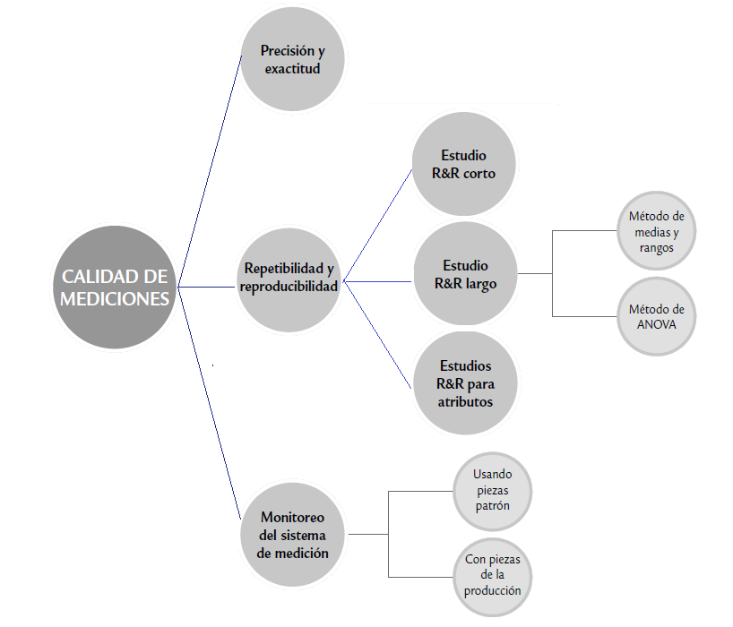

Estudio reproducibilidad y repetibilidad gageR&R

Se evalúa qué parte de la variabilidad total es atribuible al error de medición; además, permite cuantificar si este error es mucho o poco en comparación con la variabilidad del producto y con las tolerancias de la característica de calidad que se mide. Cualquier proceso de medición genera un error. Lo que se observa es la realidad más un error de medición.

Los métodos utilizados para realizar los análisis de R&R son:
Método del rango (método corto)
Método del promedio y del rango
Análisis de varianza (Anova); considera un modelo de efectos aleatorios para todos los factores de la variación del sistema (operadores, partes, interacción e instrumento)
Sean:
\(σ^2_{total}\) la variabilidad total observada
\(σ^2_{prod}\) la varianza atribuible al producto (partes o piezas)
\(σ^2_{instr}\) la variabilidad del instrumento de medición
\(σ^2_{oper}\) la variabilidad o error debido a operadores
Cumpliendo la siguiente relación:
\[σ^2_{total}=σ^2_{prod}+σ^2_{instr}+σ^2_{oper}\] donde \[σ^2_{instr}=σ^2_{repeti}\] \[σ^2_{Oper}=σ^2_{reprod}\]
Por lo tanto, el error o variabilidad de las mediciones debido a repetibilidad y reproducibilidad se obtiene con
\[σ^2_{RyR}=σ^2_{repet}+σ^2_{reprod}\] Pasos para realizar un estudio R&R largo
para cada instrumento de medición que se desee evaluar es necesario plantear un estudio en el que se apliquen los siguientes pasos:
1. Seleccionar
dos o más operadores para conducir el estudio acerca del instrumento de medición de interés.
10 o más partes o piezas que serán medidas varias veces por cada operador.
2. Decidir el número de ensayos o veces que cada operador medirá la misma pieza. por lo menos dos ó tres ensayos es lo más recomendable.
3.Identificar la zona o punto en la parte donde la medición será tomada, así como el método o técnica que deberá aplicarse.
4. Obtener en orden aleatorio la primera medición (o ensayo) del operador A para todas las piezas seleccionadas.
5. Volver a aleatorizar las piezas y obtener la primera medición del operador B.
6. Continuar hasta que todos los operadores hayan realizado la primera medición de todas las piezas.
7. Hacer el análisis estadístico de los datos.
ANOVA para el estudio de repetibilidad y reproducibilidad
Permite identificar y cuantificar de mejor manera todas las fuentes de variación presentes en el estudio R&R. Para comprender los conceptos utilizados en la presente sección se recomienda revisar los conceptos de análisis de varianza.
El método de ANOVA reparte la variación total \(σ^2_{total}\) de los datos en la siguiente forma:
\[σ^2_{total}=σ^2_{parte}+σ^2_{oper}+σ^2_{oper×parte}+σ^2_{instr}\] donde se agrega el componente de interacción entre el operador y la parte, el mismo que se considera parte de la reproducibilidad. Es decir, se cumplen las siguientes relaciones:
\[σ^2_{repeti}=σ^2_{instr}\] \[σ^2_{reprod} = σ^2_{oper} + σ^2_{oper × parte}\] \[σ^2_{RyR}=σ^2_{repet}+σ^2_{reprod}\]
Estos componentes se estiman mediante la técnica de ANOVA aplicada a un diseño factorial con efectos aleatorios. De los datos del estudio R&R largo se pueden calcular las llamadas sumas de cuadrados (SC) correspondientes a cada componente de variación, cumpliendo con la relación
\[ SC_{total}=SC_{parte}+SC_{oper}+SC_{oper×parte}+ SC_{error}\]
donde la suma de cuadrados del error \(SC_{error}\) corresponde a la repetibilidad.
Considere
p partes,
t ensayos
o operadores,
los grados de libertad correspondientes a cada suma de cuadrados de la ecuación anterior son, respectivamente,
\[opt − 1 = (p − 1) + (o − 1) + (o − 1)( p − 1) + op(t − 1)\] Al dividir cada suma de cuadrados por sus grados de libertad se obtienen los cuadrados medios (CM), con ellos se pueden construir pruebas estadísticas para verificar diferencias entre las partes, entre los operadores y la presencia de efecto de interacción operador × parte.
La tabla anova está definida de la forma
| Fuente de variación | Grados de libertad | Suma de cuadrados | cuadrados medios | Estadístico |
|---|---|---|---|---|
| operador | o-1 | \(SC_o\) | \(MS_O=SC_o/(o-1)\) | \(F_0=MS_o/MSE\) |
| parte | p-1 | \(SC_p\) | \(MC_p=SC_p/(p-1)\) | \(F_0=MC_p/MSE\) |
| Operador*parte | \((o-1)\ast(p-1)\) | \(SC_{op}\) | \(MC_{op}=SC_{op}/(o-1)\ast(p-1)\) | \(F_0=MC_{op}/MSE\) |
| Error(instrumento) | op(t-1) | \(SC_e\) | \(MC_e=SC_e/op(t-1)\) | |
| Total | opt-1 | SCT |
Donde la suma de cuadrados del error (SCe) corresponde a la Repetibilidad; es decir, al error en las mediciones debido al instrumento de medición.
Prueba de hipótesis de significancia de los parámetros
\[H_0=\beta_i=0\]
\[H_0=\beta_i \neq 0\] Medidas de varianza para cada una de las componentes
Varianza del operador = varianza de la reproducibilidad
\[\sigma^2_{op}=\frac{MC_o-MC_{op}}{tp}\] Varianza de la parte o pieza
\[\sigma^2_{parte}=\frac{MC_p-MC_{op}}{to}\] Varianza de la interacción
\[\sigma^2_{op*par}=\frac{MC_{op}-MC_e}{t}\] Varianza del instrumento = Varianza de la repetibilidad \[\sigma^2_{inst}=MCe\]
índice de presición/ tolerancia
La RyR estiman la dispersión que cubre un 99% (5.15σ) de las variaciones debidas al equipo de medición y a los operadores respectivamente. La tolerancia del sistema también se ve afectada por variabilidad de cada componente del análisis, el cálculo para obtener el porcentaje de esta afectación se puede realizar mediante los índices de precisión/tolerancia (IP/T), para cada uno de los componentes
\[Repetibilidad=\frac{\sqrt{\sigma^2_{inst}*5.15}*100}{tolerancia}\]
\[Reproducibilidad=\frac{\sqrt{\sigma^2_{oper}}*5.15*100}{tolerancia}\]
\[RyR=\frac{\sqrt{\sigma^2_{inst}*\sigma^2_{oper}}*5.15*100}{tolerancia}\]
\[Parte=\frac{\sqrt{\sigma^2_{parte}}*5.15*100}{tolerancia}\] El criterio para establecer si el sistema de medición es preciso, con base al índice de precisión/tolerancia (IP/T) del medidor Gage R&R total, es el siguiente:
| Rango del IP/T | Sistema de medición |
|---|---|
| \(IP/T_{R\&R} ≤ 10\%\) | Excelente |
| \(10\% <IP/T_{R\&R} ≤ 20\%\) | Bueno |
| \(20\% <IP/T_{R\&R} ≤ 30\%\) | Marginal |
| \(IP/T_{R\&R} ≥ 30\%\) | Inaceptable |
si la Repetibilidad >> Reproducibilidad, entonces:
El instrumento de medición necesita mantenimiento.
El instrumento de medición está obsoleto y requiere un rediseño.
El lugar donde se efectúan las mediciones necesita ser mejorado.
Existe una variabilidad excesiva entre las partes.
Si la Reproducibilidad >> la Repetibilidad, entonces:
Los operadores necesitan mejor entrenamiento en la utilización y lectura del instrumento de medición.
La indicación del instrumento de medición no es clara.
No se han mantenido condiciones de Reproducibilidad buenas y/o el instrumento de medición presenta deriva.
Ejemplo
Un fabricante de baterías hace varios tipos de baterías/pilas para uso doméstico. se quiere empezar un proyecto Seis Sigma para mejorar la línea de producción de las pilas de voltaje 1.5.
Se tiene la variable “voltaje”, 2 voltímetros disponibles y 3 pilas diferentes son seleccionadas al azar al final de la línea de producción. Se mide el voltaje de cada pila con cada voltímetro 3 veces. Los datos son los siguientes:
library(ggplot2)
voltmeter = factor(rep(1:2, each = 9))
battery = factor(rep(rep(1:3, each = 3), 2))
run = factor(rep(1:3, 6))
voltage = c(1.4727, 1.4206, 1.4754, 1.5083, 1.5739, 1.4341, 1.5517, 1.5483, 1.4614,
1.3337,1.6078, 1.4767, 1.4066, 1.5951, 1.8419,1.7087, 1.8259, 1.5444)
batteries = data.frame(voltmeter, battery,run, voltage)
batteries## voltmeter battery run voltage
## 1 1 1 1 1.4727
## 2 1 1 2 1.4206
## 3 1 1 3 1.4754
## 4 1 2 1 1.5083
## 5 1 2 2 1.5739
## 6 1 2 3 1.4341
## 7 1 3 1 1.5517
## 8 1 3 2 1.5483
## 9 1 3 3 1.4614
## 10 2 1 1 1.3337
## 11 2 1 2 1.6078
## 12 2 1 3 1.4767
## 13 2 2 1 1.4066
## 14 2 2 2 1.5951
## 15 2 2 3 1.8419
## 16 2 3 1 1.7087
## 17 2 3 2 1.8259
## 18 2 3 3 1.5444ggplot(batteries,aes(voltmeter,voltage))+geom_boxplot(aes(colour=battery))
El modelo de efectos fijos corresponde a:
\[\large Y_{ijk}=\mu+\alpha_i+\beta_j+(\alpha\beta)_{ij} +\varepsilon_{ijk}\] Donde:
\(Y_{ijk}\) es la k ésima respuesta para la combinación ij
\(\large \mu\) es la media global del modelo
\(\large \alpha_i\) es el efecto de la i-ésima pila medida (3) gl=(o-1)=2
\(\large \beta_j\) es el efecto de la j-ésimo voltímetro (2) gl=(p-1)=1
\(\large (\alpha\beta)_{ij}\) es el efecto de la interacción entre la i-esima pila y j-ésimo voltímetro usado gl=(o-1)*(p-1)=2
\(\large \varepsilon_{ijk}\) es el error aleatorio, q se considera la repetibilidad dada por el instrumento. gl=op(t-1)
sujeto a :
\[\varepsilon_{ijk} \sim N(0,\sigma^2) \qquad \sum_{i=1}^2 \alpha_i=0 \qquad \sum_{j=1}^1 \beta_j=0 \qquad \sum_{j=1}^3 (\alpha\beta)_{ij}=0 \qquad \sum_{i=1}^2 (\alpha\beta)_{ij}=0\]
anova=aov(voltage ~ voltmeter+battery+voltmeter*battery)
summary(anova)## Df Sum Sq Mean Sq F value Pr(>F)
## voltmeter 1 0.04444 0.04444 2.809 0.120
## battery 2 0.06308 0.03154 1.994 0.179
## voltmeter:battery 2 0.01847 0.00924 0.584 0.573
## Residuals 12 0.18982 0.01582library(SixSigma)
#ss.rr(var, part, appr, data, main, sub)
my.rr <- ss.rr(var = voltage, part = battery,
appr = voltmeter,
data = batteries,
main = "Six Sigma Gage R&R Measure",
sub = "Batteries Project MSA")## Complete model (with interaction):
##
## Df Sum Sq Mean Sq F value Pr(>F)
## battery 2 0.06308 0.03154 3.415 0.227
## voltmeter 1 0.04444 0.04444 4.812 0.160
## battery:voltmeter 2 0.01847 0.00924 0.584 0.573
## Repeatability 12 0.18982 0.01582
## Total 17 0.31582
##
## alpha for removing interaction: 0.05
##
##
## Reduced model (without interaction):
##
## Df Sum Sq Mean Sq F value Pr(>F)
## battery 2 0.06308 0.03154 2.120 0.157
## voltmeter 1 0.04444 0.04444 2.987 0.106
## Repeatability 14 0.20829 0.01488
## Total 17 0.31582
##
## Gage R&R
##
## VarComp %Contrib
## Total Gage R&R 0.018162959 86.74
## Repeatability 0.014878111 71.05
## Reproducibility 0.003284848 15.69
## voltmeter 0.003284848 15.69
## Part-To-Part 0.002777127 13.26
## Total Variation 0.020940086 100.00
##
## StdDev StudyVar %StudyVar
## Total Gage R&R 0.13477002 0.8086201 93.13
## Repeatability 0.12197586 0.7318552 84.29
## Reproducibility 0.05731359 0.3438816 39.61
## voltmeter 0.05731359 0.3438816 39.61
## Part-To-Part 0.05269846 0.3161907 36.42
## Total Variation 0.14470690 0.8682414 100.00
##
## Number of Distinct Categories = 1## Warning in widths.x[pos.widths[[nm]]] <- widths.settings[[nm]] *
## widths.defaults[[nm]]$x: número de items para para sustituir no es un múltiplo
## de la longitud del reemplazoPorcentaje de contribución a la varianza
Es el cociente de cada componente de varianza con respecto a la varianza total \((σ^2_{comp}/σ^2_{total})\), provee una interpretación en la escala de las varianzas.
si la contribución es menor que 10% el sistema de medición es aceptable,
la contribución máxima debe ser del 1% para que sea excelente